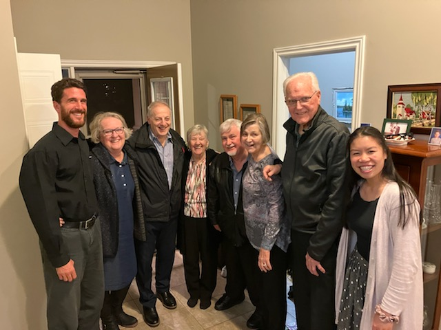
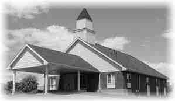

Welcome to Sovereign Grace Baptist Church
We are a confessional, reformed Baptist church in London, Ontario, CanadaSunday Services begin @ 11:30 a.m.
<
-
Our Purpose
We exist by the grace of God and for His glory. All of our activities are for that ultimate purpose.
-

Our Worship
Our worship is God honouring, Christ centred & Spirit filled. With expository preaching & uplifting music.
-
Our Beliefs
We believe the Holy Bible is the inspired, infallible, complete Word of God.
-

Our Community
We are a community gathered and united in Christ to reflect His loving kindness and grace.
-

Our Location
1274 Tote Road, London ON
info@sglondon.ca